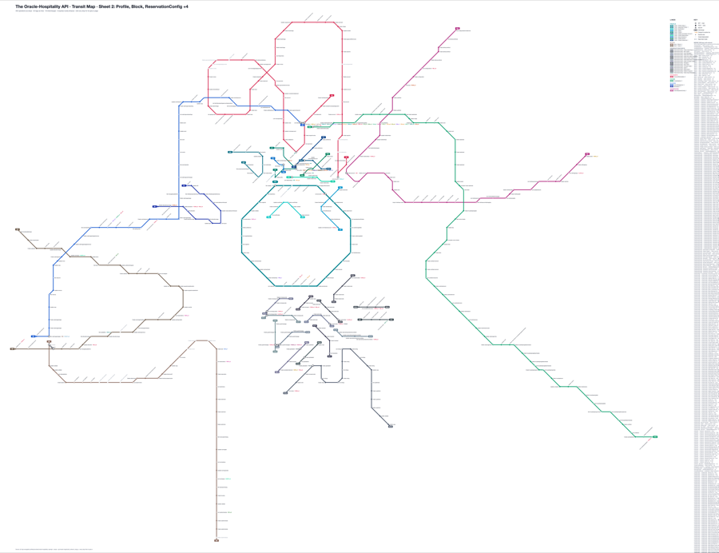
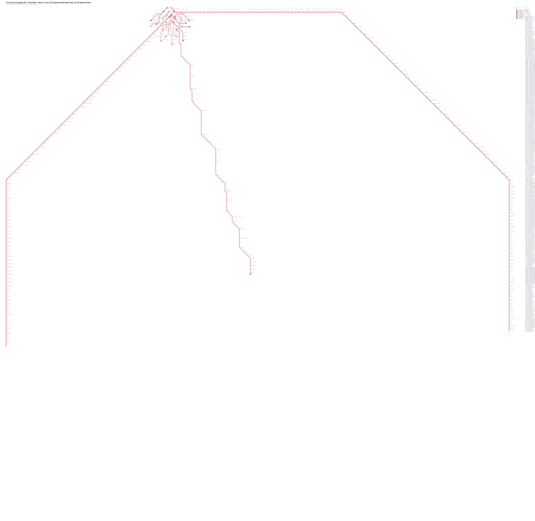
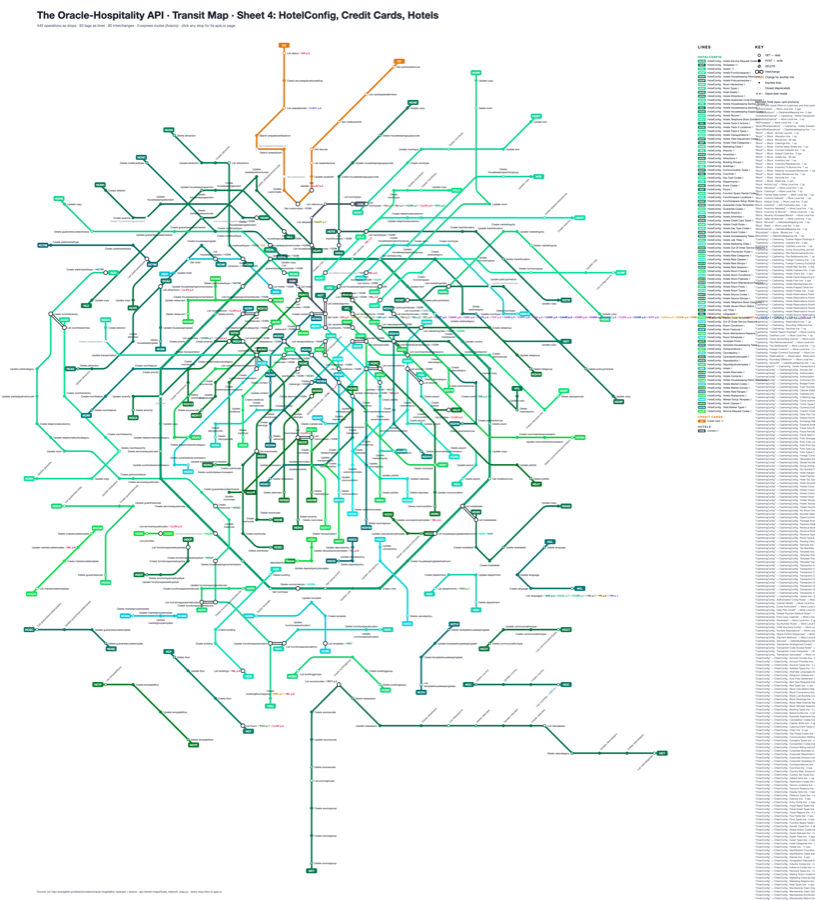
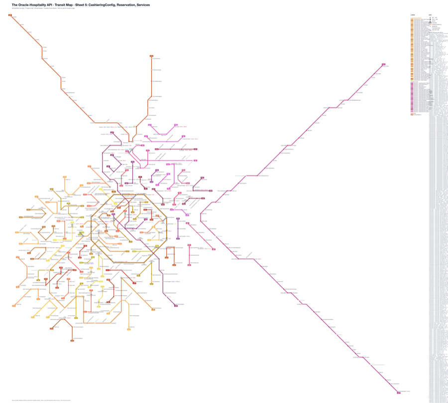
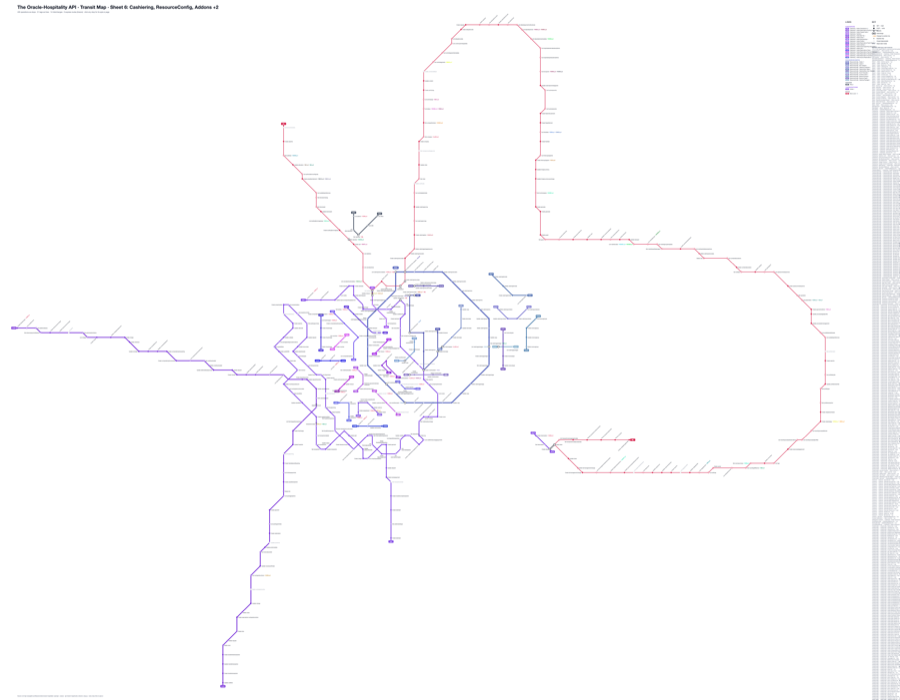
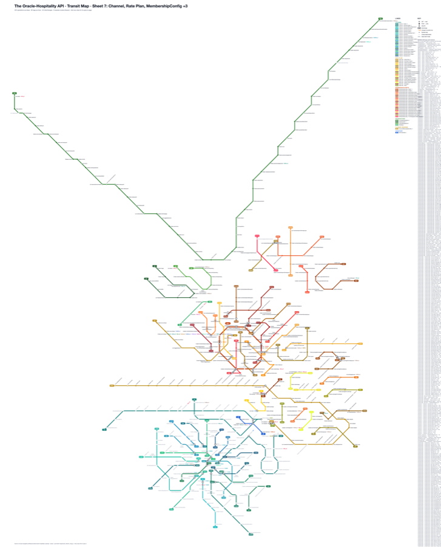
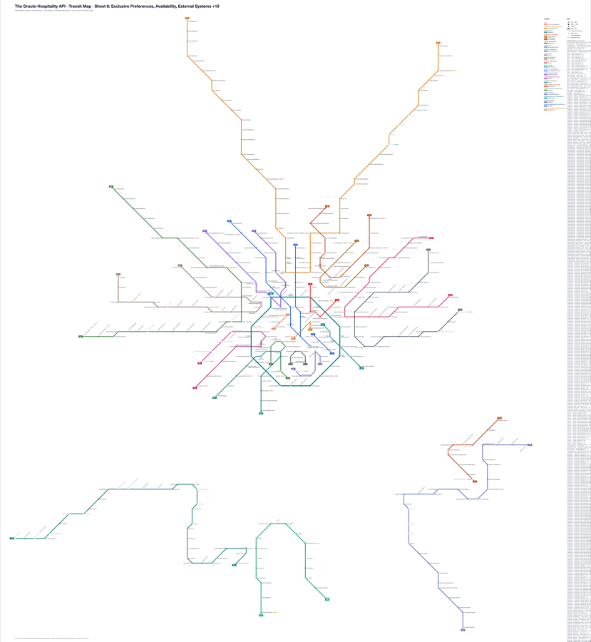

p.1 ChainConfig, Memberships
450 operations · 99 lines
- ChainConfig
- Memberships
Interchanges to p.2 (5), p.3 (2), p.4 (5), p.5 (3), p.6 (3), p.7 (4), p.8 (1)
3493 operations on 8 sheets · products that interchange most share a sheet · on each sheet, "⇄CODE p.N" means change for that line on page N · every stop links to apis.io
450 operations · 99 lines
Interchanges to p.2 (5), p.3 (2), p.4 (5), p.5 (3), p.6 (3), p.7 (4), p.8 (1)

450 operations · 32 lines
Interchanges to p.1 (5), p.3 (3), p.4 (20), p.5 (9), p.6 (10), p.7 (10), p.8 (24)

449 operations · 15 lines
Interchanges to p.1 (2), p.2 (3), p.4 (9), p.5 (7), p.6 (4), p.7 (1), p.8 (4)

449 operations · 93 lines
Interchanges to p.1 (5), p.2 (20), p.3 (9), p.5 (29), p.6 (30), p.7 (27), p.8 (20)

448 operations · 75 lines
Interchanges to p.1 (3), p.2 (9), p.3 (7), p.4 (29), p.6 (14), p.7 (4), p.8 (5)

435 operations · 31 lines
Interchanges to p.1 (3), p.2 (10), p.3 (4), p.4 (30), p.5 (14), p.7 (6)

424 operations · 65 lines
Interchanges to p.1 (4), p.2 (10), p.3 (1), p.4 (27), p.5 (4), p.6 (6), p.8 (8)

388 operations · 24 lines
Interchanges to p.1 (1), p.2 (24), p.3 (4), p.4 (20), p.5 (5), p.7 (8)